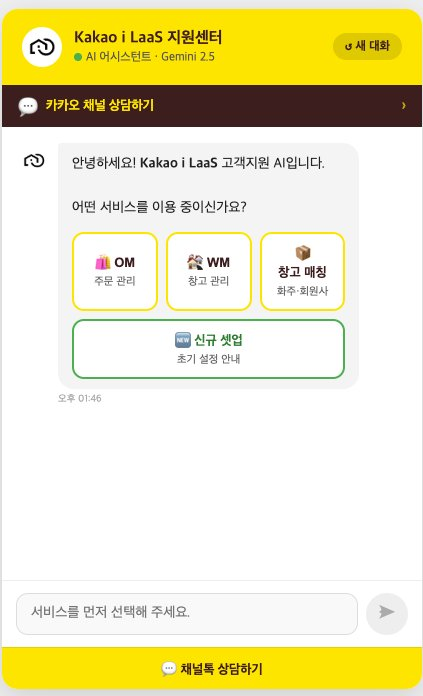
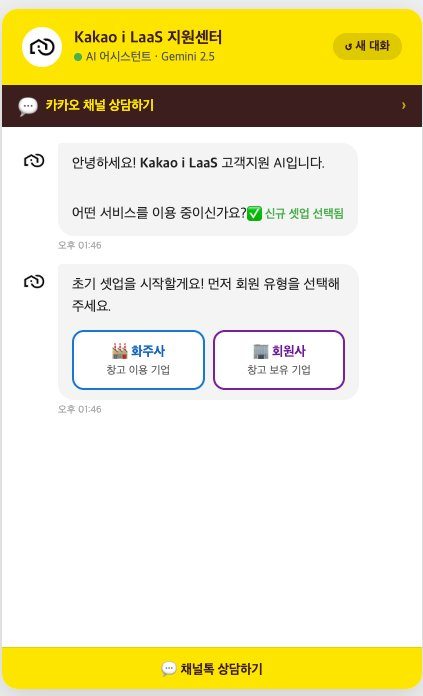
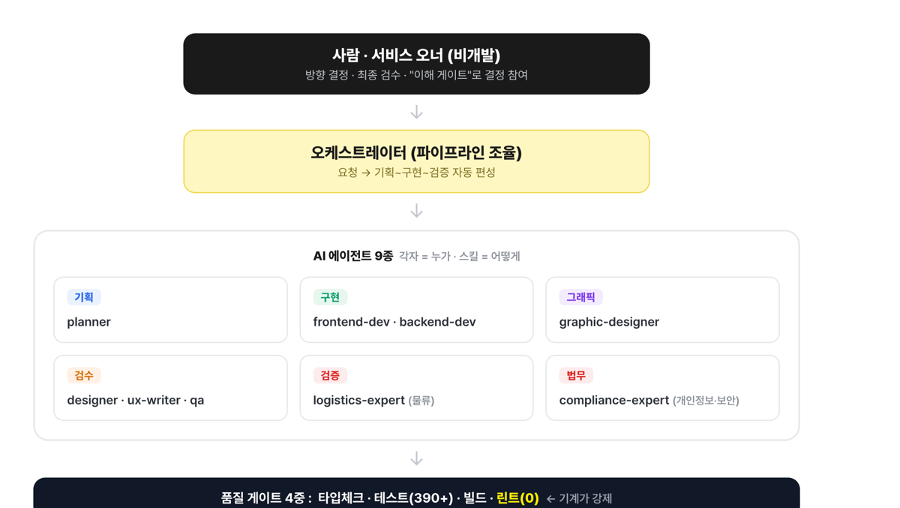
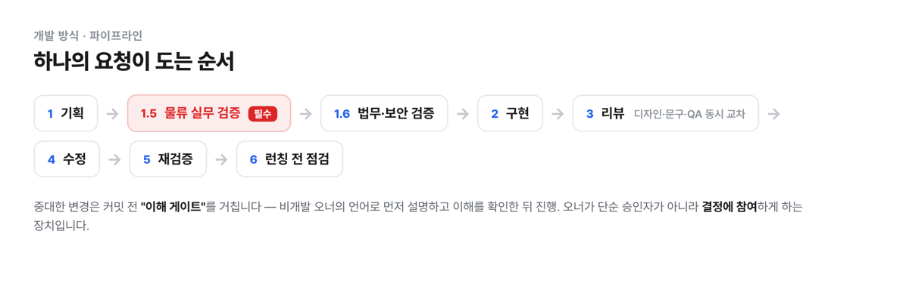

화주사 발굴부터 OMS·WMS 셋업, 화주사·물류사 운영 프로세스 설계, 현장 운영 이슈 대응까지 — 물류 시스템과 운영을 처음부터 끝까지 직접 다뤄온 물류 전문가입니다.
About
삼익THK 물류자동화 부품 영업으로 커리어를 시작해, 한국네트웍스 OMS·WMS·TMS 대기업 수주 영업, 롯데정보통신 롯데글로벌로지스 전담 영업을 거쳐, 현재 카카오엔터프라이즈 i LaaS에서 물류 시스템 영업과 화주사·물류사 운영 관리를 담당하고 있습니다. 그중에서도 물류 시스템 구축 · 화주사·물류사 운영 프로세스 설계 · 시스템 셋업 · 운영 이슈 해결에서 가장 큰 강점을 발휘합니다.
Strengths
물류 시스템부터 화주사·물류사 운영 프로세스까지, 현장에서 검증한 실행력입니다.
i LaaS LAB센터 — 온보딩의 처음부터 끝까지 직접 설계한 경험
화주 4개사를 직접 수주하고, 계약 이후 물류 운영 프로세스 정립부터 자동화 설비 선정, WM 시스템 셋업, 현장 교육, 운영 이슈 대응까지 원스톱으로 담당했습니다.
경력
카카오엔터프라이즈 · LaaS 사업팀 매니저
물류 SaaS 플랫폼(OMS·WMS) 영업 및 PJT PMO
롯데정보통신 · 유통서비스영업팀 선임
롯데글로벌로지스 전담 및 대외 시스템 영업
한국네트웍스 · 솔루션영업팀 선임
SCM 솔루션(OMS·WMS·TMS) 대외 프로젝트 영업 대표
삼익THK · 영업/마케팅팀 계장
물류자동화 부품 기술영업 및 B2B 마케팅
대표 프로젝트
플랫폼 화주사 약 150개사의 물류 운영 프로세스를 확인하고 물류사와 프로세스를 협의·가이드했으며, 시스템 셋업·교육·안정화를 지원했습니다. 프로덕트 운영과 VOC 창구를 겸해 공식 집계를 시작한 2025년부터 약 550건의 운영 대응을 처리했고, 문의 데이터를 분석해 개선 과제를 도출·기획하고 개발·테스트·배포까지 리드했습니다.
데이터 기반 개선 — 업체당 문의 17%↓ · 업체당 오류 25%↓ (2026년 상반기 기준)As-Is 분석 & To-Be 프로세스 도출부터 개발 Follow-up, 오픈 셋업·안정화·교육, 운영유지보수 채널까지 단독 리드.
단위·통합테스트 시나리오 설계, 현장 작업자 교육 매뉴얼 작성, 오픈 현장 대응 및 완료 보고.
11개 센터 순차 오픈 현장 대응, 사용자 매뉴얼 작성, 운영 유지보수·개선 과제 지속 담당.
현지 요건 정립 및 GAP 분석, 글로벌 확산 프로젝트 일정·진척률 관리.
직접 만든 것들
영업/온보딩 실무에서 부딪힌 문제를 AI 도구로 직접 구조화하고 만들어봤습니다.


Gemini 2.5 기반 상담 챗봇을 직접 기획·개발했습니다. OM·WM·창고매칭 서비스별로 분기하고, 신규 셋업 시 화주사/회원사 유형부터 순서대로 안내하는 온보딩 시나리오를 설계했습니다. 고객사별 FAQ는 스프레드시트와 연동해 실시간으로 반영됩니다.
직접 사용해보기

화주사와 물류사가 직접 견적을 주고받는 B2B 매칭 플랫폼을 Next.js·Prisma로 개발했습니다. 기획, 구현, 디자인/문구 검수, 물류 실무 검증, 보안·컴플라이언스 검토까지 역할을 나눈 AI 에이전트 파이프라인으로 구조화해 개발 품질을 관리했습니다.
사내 비공개 프로젝트 · 개발 과정 구조도동료 피드백
“문제를 해결하기 위해 어떤 부분을 개선해야 하는지 잘 알고 있습니다. 새로운 프로세스를 익히기 위해 적극적으로 노력합니다.”
동료 피드백 (비공개)
“고객 지향적인 product를 만들기 위해 항상 고민하고 의견을 개진하며, 타 팀과 협업하고자 하는 태도가 우수합니다.”
동료 피드백 (비공개)
“올 한해 가장 많은 고객사와 다양한 비즈니스 기회를 만드는 데 노력했고, 사업의 중요한 분야인 매칭을 이끌어냈습니다.”
동료 피드백 (비공개)
“문제를 해결하기 위해 어떤 부분을 개선해야 하는지 잘 알고 있습니다. 새로운 프로세스를 익히기 위해 적극적으로 노력합니다.”
동료 피드백 (비공개)
“고객 지향적인 product를 만들기 위해 항상 고민하고 의견을 개진하며, 타 팀과 협업하고자 하는 태도가 우수합니다.”
동료 피드백 (비공개)
“올 한해 가장 많은 고객사와 다양한 비즈니스 기회를 만드는 데 노력했고, 사업의 중요한 분야인 매칭을 이끌어냈습니다.”
동료 피드백 (비공개)
핵심 역량
물류 시스템부터 화주사·물류사 운영까지, 더 자세히 이야기 나누고 싶습니다
물류 시스템 구축, 화주사·물류사 운영 프로세스, 시스템 셋업 경험에 대해
궁금하신 점이 있다면 편하게 연락 주세요.